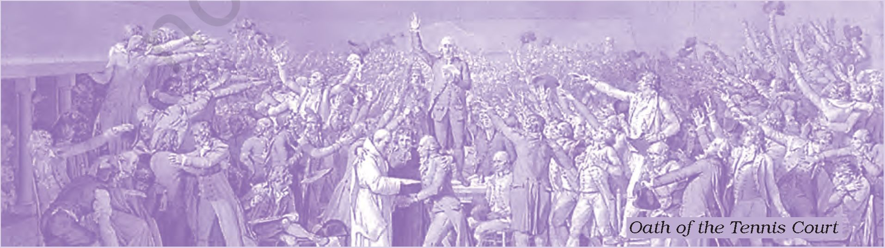

THEME FIFTEEN
The Indian Constitution, which came into effect on 26 January 1950, has the dubious distinction of being the longest in the world. But its length and complexity are perhaps understandable when one considers the country’s size and diversity. At Independence, India was not merely large and diverse, but also deeply divided. A Constitution designed to keep the country together, and to take it forward, had necessarily to be an elaborate, carefully-worked-out, and painstakingly drafted document. For one thing, it sought to heal wounds of the past and the present, to make Indians of different classes, castes and communities come together in a shared political experiment. For another, it sought to nurture democratic institutions in what had long been a culture of hierarchy and deference.
The Constitution of India was framed between December 1946 and November 1949. During this time its drafts were discussed clause by clause in the Constituent Assembly of India. In all, the Assembly
Fig. 15.1
The Constitution was signed in December 1949 after three years of debate.
held eleven sessions, with sittings spread over 165 days. In between the sessions, the work of revising and refining the drafts was carried out by various committees and sub-committees.
From your political science textbooks you know what the Constitution of India is, and you have seen how it has worked over the decades since Independence. This chapter will introduce you to the history that lies behind the Constitution, and the intense debates that were part of its making. If we try and hear the voices within the Constituent Assembly, we get an idea of the process through which the Constitution was framed and the vision of the new nation formulated.
Fig. 15.2
Images of desolation and destruction continued to haunt members of the Constituent Assembly.
The years immediately preceding the making of the Constitution had been exceptionally tumultuous: a time of great hope, but also of abject disappointment. On 15 August 1947, India had been made free, but it had also been divided. Fresh in popular memory were the Quit India struggle of 1942 - perhaps the most widespread popular movement against the British Raj - as well as the bid by Subhas Chandra Bose to win freedom through armed struggle with foreign aid. An even more recent upsurge had also evoked much popular sympathy - this was the rising of the ratings of the Royal Indian Navy in Bombay and other cities in the spring of 1946. Through the late 1940s there were periodic, if scattered, mass protests of workers and peasants in different parts of the country.
One striking feature of these popular upsurges was the degree of Hindu-Muslim unity they manifested. In contrast, the two leading Indian political parties, the Congress and the Muslim League, had repeatedly failed to arrive at a settlement that would bring about religious reconciliation and social harmony. The Great Calcutta Killings of August 1946 began a year of almost continuous rioting across northern and eastern India (see Chapters 13 and 14). The violence culminated in the massacres that accompanied the transfer of populations when the Partition of India was announced.
On Independence Day, 15 August 1947, there was an outburst of joy and hope, unforgettable for those who lived through that time. But innumerable Muslims in India, and Hindus and Sikhs in Pakistan, were now faced with a cruel choice - the threat of
Fig. 15.3
Jawaharlal Nehru speaking in the Constituent Assembly at midnight onl4 August 1947
It was on this day that Nehru gave his famous speech that began with the following lines:
“Long years ago we made a tryst with destiny, and now the time comes when we shall redeem our pledge, not wholly or In full measure, but very substantially. At the stroke of the midnight hour, when the world sleeps, India will awake to life and freedom.”
sudden death or the squeezing of opportunities on the one side, and a forcible tearing away from their age-old roots on the other. Millions of refugees were on the move, Muslims into East and West Pakistan, Hindus and Sikhs into West Bengal and the eastern half of the Punjab. Many perished before they reached their destination.
Another, and scarcely less serious, problem faced by the new nation was that of the princely states. During the period of the Raj, approximately one-third of the area of the subcontinent was under the control of nawabs and maharajas who owed allegiance to the British Crown, but were otherwise left mostly free to rule - or misrule - their territory as they wished. When the British left India, the constitutional status of these princes remained ambiguous. As one contemporary observer remarked, some maharajas now began “to luxuriate in wild dreams of independent power in an India of many partitions”.
This was the background in which the Constituent Assembly met. How could the debates within the Assembly remain insulated from what was happening outside?
1.1 The making of the Constituent Assembly
The members of the Constituent Assembly were not elected on the basis of universal franchise. In the winter of 1945-46 provincial elections were held in India. The Provincial Legislatures then chose the representatives to the Constituent Assembly.
The Constituent Assembly that came into being was dominated by one party: the Congress. The
Congress swept the general seats in the provincial elections, and the Muslim League captured most of the reserved Muslim seats. But the League chose to boycott the Constituent Assembly, pressing its demand for Pakistan with a separate constitution. The Socialists too were initially unwilling to join, for they believed the Constituent Assembly was a creation of the British, and therefore incapable of being truly autonomous. In effect, therefore, 82 per cent of the members of the Constituent Assembly were also members of the Congress.
The Congress however was not a party with one voice. Its members differed in their opinion on critical issues. Some members were inspired by socialism while others were defenders of landlordism. Some were close to communal parties while others were assertively secular. Through the national movement Congress members had learnt to debate their ideas in public and negotiate their differences. Within the Constituent Assembly too, Congress members did not sit quiet.
Fig. 15.4
The Constituent Assembly in session
Sardar Vallabh Bhal Patel Is seen sitting second from right.
The discussions within the Constituent Assembly were also influenced by the opinions expressed by the public. As the deliberations continued, the arguments were reported in newspapers, and the proposals were publicly debated. Criticisms and counter-criticisms in the press in turn shaped the nature of the consensus that was ultimately reached on specific issues. In order to create a sense of collective participation the public was also asked to send in their views on what needed to be done. Many of the linguistic minorities wanted the protection of their mother tongue, religious minorities asked for special safeguards, while dalits demanded an end to all caste oppression and reservation of seats in government bodies. Important issues of cultural rights and social justice raised in these public discussions were debated on the floor of the Assembly.
The Constituent Assembly had 300 members. Of these, six members played particularly important roles. Three were representatives of the Congress, namely, Jawaharlal Nehru, Vallabh Bhai Patel and Rajendra Prasad. It was Nehru who moved the crucial “Objectives Resolution”, as well as the resolution proposing that the National Flag of India be a “horizontal tricolour of saffron, white and dark green in equal proportion”, with a wheel in navy blue at the centre. Patel, on the other hand, worked mostly behind the scenes, playing a key role in the drafting of several reports, and working to reconcile opposing points of view. Rajendra Prasad’s role was as President of the Assembly, where he had to steer the discussion along constructive lines while making sure all members had a chance to speak.
Besides this Congress trio, a very important member of the Assembly was the lawyer and economist B.R. Ambedkar. During the period of British rule, Ambedkar had been a political opponent of the Congress; but, on the advice of Mahatma Gandhi, he was asked at Independence to join the Union Cabinet as law minister. In this capacity, he served as Chairman of the Drafting Committee of the Constitution. Serving with him were two other lawyers, K.M. Munshi from Gujarat and Alladi Krishnaswamy Aiyar from Madras, both of whom gave crucial inputs in the drafting of the Constitution.
These six members were given vital assistance by two civil servants. One was B. N. Rau, Constitutional Advisor to the Government of India, who prepared a series of background papers based on a close study of the political systems obtaining in other countries.
The other was the Chief Draughtsman, S. N. Mukheijee, who had the ability to put complex proposals in clear legal language.
Ambedkar himself had the responsibility of guiding the Draft Constitution through the Assembly. This took three years in all, with the printed record of the discussions taking up eleven bulky volumes. But while the process was long it was also extremely interesting. The members of the Constituent Assembly were eloquent in expressing their sometimes very divergent points of view. In their presentations we can discern many conflicting ideas of India - of what language Indians should speak, of what political and economic systems the nation should follow, of what moral values its citizens should uphold or disavow.
O Discuss...
Look again at Chapters 13 and 14. Discuss how the political situation of the time may have shaped the nature of the debates within the Constituent Assembly.
Fig. 15.5
B. R. Ambedkar presiding over a discussion of the Hindu Code Bill
2.. THE VISION OF THE CONSTITUTION
On 13 December 1946, Jawaharlal Nehru introduced the “Objectives Resolution” in the Constituent Assembly. It was a momentous resolution that outlined the defining ideals of the Constitution of Independent India, and provided the framework within which the work of constitution-making was to proceed. It proclaimed India to be an “Independent Sovereign Republic”, guaranteed its citizens justice, equality and freedom, and assured that “adequate safeguards shall be provided for minorities, backward and tribal areas, and Depressed and Other Backward Classes ... ” After outlining these objectives, Nehru placed the Indian experiment in a broad historical perspective. As he spoke, he said, his mind went back to the historic efforts in the past to produce such documents of rights.
Source 1
“We are not going just to copy”
This is what Jawaharlal Nehru said in his famous speech of 13 December 1946:
My mind goes back to the various Constituent Assemblies that have gone before and of what took place at the making of the great American nation when the fathers of that nation met and fashioned out a Constitution which has stood the test of so many years, more than a century and a half, and of the great nation which has resulted, which has been built up on the basis of that Constitution. My mind goes back to that mighty revolution which took place also over 150 years ago and to that Constituent Assembly that met in that gracious and lovely city of Paris which has fought so many battles for freedom, to the difficulties that that Constituent Assembly had and to how the King and other authorities came in its way, and still it continued. The House will remember that when these difficulties came and even the room for a meeting was denied to the then Constituent Assembly, they betook themselves to an open tennis court and met there and took the oath, which is called the Oath of the Tennis Court, that they continued meeting in spite of Kings, in spite of the others, and did not disperse till they had finished the task they had undertaken. Well, I trust that it is in that solemn spirit that we too are meeting here and that we, too, whether we meet in this chamber or other chambers, or in the fields or in the market-place, will go on meeting and continue our work till we have finished it.
contd
Then my mind goes back to a more recent revolution which gave rise to a new type of State, the revolution that took place in Russia and out of which has arisen the Union of the Soviet Socialist Republics, another mighty country which is playing a tremendous part in the world, not only a mighty country but for us in India, a neighbouring country.
So our mind goes back to these great examples and we seek to learn from their success and to avoid their failures. Perhaps we may not be able to avoid failures because some measure of failure is inherent in human effort. Nevertheless, we shall advance, I am certain, in spite of obstructions and difficulties, and achieve and realise the dream that we have dreamt so long ...
We say that it is our firm and solemn resolve to have an independent sovereign republic. India is bound to be sovereign, it is bound to be independent and it is bound to be a republic ... Now, some friends have raised the question: “Why have you not put in the word ‘democratic’ here.?” Well, I told them that it is conceivable, of course, that a republic may not be democratic but the whole of our past is witness to this fact that we stand for democratic institutions. Obviously we are aiming at democracy and nothing less than a democracy. What form of democracy, what shape it might take is another matter. The democracies of the present day, many of them in Europe and elsewhere, have played a great part in the world’s progress. Yet it may be doubtful if those democracies may not have to change their shape somewhat before long if they have to remain completely democratic. We are not going just to copy, I hope, a certain democratic procedure or an institution of a so-called democratic country. We may improve upon it. In any event whatever system of government we may establish here must fit in with the temper of our people and be acceptable to them. We stand for democracy. It will be for this House to determine what shape to give to that democracy, the fullest democracy, I hope. The House will notice that in this Resolution, although we have not used the word “democratic” because we thought it is obvious that the word “republic” contains that word and we did not want to use unnecessary words and redundant words, but we have done something much more than using the word. We have given the content of democracy in this Resolution and not only the content of democracy but the content, if I may say so, of economic democracy in this Resolution. Others might take objection to this Resolution on the ground that we have not said that it should be a Socialist State. Well, I stand for Socialism and, I hope, India will stand for Socialism and that India will go towards the constitution of a Socialist State and I do believe that the whole world will have to go that way.
Constituent Assembly Debates (CAD), vol.i
Nehru’s speech (Source 1) merits careful scrutiny. What exactly was being stated here? What did Nehru’s seemingly nostalgic return to the past reflect? What was he saying about the origin of the ideas embodied in the vision of the Constitution? In returning to the past and referring to the American and French Revolutions, Nehru was locating the history of constitution-making in India within a longer history of struggle for liberty and freedom. The momentous nature of the Indian project was emphasised by linking it to revolutionary moments in the past. But Nehru was not suggesting that those events were to provide any blueprint for the present; or that the ideas of those revolutions could be mechanically borrowed and applied in India. He did not define the specific form of democracy, and suggested that this had to be decided through deliberations. And he stressed that the ideals and provisions of the constitution introduced in India could not be just derived from elsewhere. “We are not going just to copy”, he said. The system of government established in India, he declared, had to “fit in with the temper of our people and be acceptable to them”. It was necessary to learn from the people of the West, from their achievements and failures, but the Western nations too had to learn from experiments elsewhere, they too had to change their own notions of democracy. The objective of the Indian Constitution would be to fuse the liberal ideas of democracy with the socialist idea of economic justice, and re-adapt and re-work all these ideas within the Indian context. Nehru’s plea was for creative thinking about what was appropriate for India.
O What explanation does Jawaharlal Nehru give for not using the term “democratic” in the Objectives Resolution in Source 1?
A Communist member, Somnath Lahiri saw the dark hand of British imperialism hanging over the deliberations of the Constituent Assembly. He thus urged the members, and Indians in general, to fully free themselves from the influences of imperial rule. In the winter of 1946-47, as the Assembly deliberated, the British were still in India. An interim administration headed by Jawaharlal Nehru was in place, but it could only operate under the directions of the Viceroy and the British Government in London. Lahiri exhorted his colleagues to realise that the Constituent Assembly was British-made and was “working the British plans as the British should like it to be worked out”.
Fig. 15.6
Source 2
Members of the Interim Government
Front row (left to right): Baldev Singh, John Mathat, C Rajagopalachari, Jawaharlal Nehru, Ltaquat Alt Khan, Vallabhbhat Patel, 1.1. Chundrigar, Asaf Alt, C.H. Bhabha.
Back row (left to right): Jagjivan Ram, Ghazarfar Alt Khan, Rajendra Prasad, Abdur Nishtar
“That is very good, Sir - bold words, noble words”
Somnath Lahiri said:
Well, Sir, I must congratulate Pandit Nehru for the fine expression he gave to the spirit of the Indian people when he said that no imposition from the British will be accepted by the Indian people. Imposition would be resented and objected to, he said, and he added that if need be we will walk the valley of struggle. That is very good, Sir - bold words, noble words.
But the point is to see when and how are you going to apply that challenge. Well, Sir, the point is that the imposition is here right now. Not only has the British Plan made any future Constitution ... dependent on a treaty satisfactory to the Britisher but it suggests that for every little difference you will have to run to the Federal Court or dance attendance there in England; or to call on the British Prime Minister Clement Attlee or someone else. Not only is it a fact that this Constituent Assembly, whatever plans we may be hatching, we are under the shadow of British guns, British Army, their economic and financial stranglehold - which means that the final power is still in the British hands and the question of power has not yet been finally decided, which means the future is not yet completely in our hands. Not only that, but the statements made by Attlee and others recently have made it clear that if need be, they will even threaten you with division entirely. This means, Sir, there is no freedom in this country. As Sardar Vallabh Bhai Patel put it some days ago, we have freedom only to fight among ourselves. That is the only freedom we have got ... Therefore, our humble suggestion is that it is not a question of getting something by working out this Plan but to declare independence here and now and call upon the Interim Government, call upon the people of India, to stop fratricidal warfare and look out against its enemy, which still has the whip hand, the British Imperialism - and go together to fight it and then resolve our claims afterwards when we will be free.
CAD, vol.i
Nehru admitted that most nationalist leaders had wanted a different kind of Constituent Assembly. It was also true, in a sense, that the British Government had a “hand in its birth”, and it had attached certain conditions within which the Assembly had to function. “But,” emphasised Nehru, “you must not ignore the source from which this Assembly derives its strength.” Nehru added:
Governments do not come into being by State Papers. Governments are, in fact the expression of the will of the people. We have met here today because of the strength of the people behind us and we shall go as far as the people - not of any party or group but the people as a whole - shall wish us to go. We should, therefore, always keep in mind the passions that lie in the hearts of the masses of the Indian people and try to fulfil them.
The Constituent Assembly was expected to express the aspirations of those who had participated in the movement for independence. Democracy, equality and justice were ideals that had become intimately associated with social struggles in India since the nineteenth century. When the social reformers in the nineteenth century opposed child marriage and demanded that widows be allowed to remarry, they were pleading for social justice. When Swami Vivekananda campaigned for a reform of Hinduism, he wanted religions to become more just. When Jyotiba Phule in Maharashtra pointed to the suffering of the depressed castes, or Communists and Socialists organised workers and peasants, they were demanding economic and social justice. The national movement against a government that was seen as oppressive and illegitimate was inevitably a struggle for democracy and justice, for citizens’ rights and equality.
In fact, as the demand for representation grew, the British had been forced to introduce a series of constitutional reforms. A number of Acts were passed (1909, 1919 and 1935), gradually enlarging the space for Indian participation in provincial governments. The executive was made partly responsible to the provincial legislature in 1919, and almost entirely so under the Government of India Act of 1935. When elections were held in 1937, under the 1935 Act, the Congress came to power in eight out of the 11 provinces.
r n
| O Why does the speaker in
। Source 2 think that the
. Constituent Assembly was
। under the shadow of
I British guns? I
i______________i
Fig. 15.7
Edwin Montague (left) was the author of the Montague-Chelmsford Reforms of 1919 which allowed some form of representation in provincial legislative assemblies.
O Discuss...
What were the ideas outlined by Jawaharlal Nehru in his speech on the Objectives Resolution?
Yet we should not see an unbroken continuity between the earlier constitutional developments and what happened in the three years from 1946. While the earlier constitutional experiments were in response to the growing demand for a representative government, the Acts (1909, 1919 and 1935) were not directly debated and formulated by Indians. They were enacted by the colonial government. The electorate that elected the provincial bodies had expanded over the years, but even in 1935 it remained limited to no more than 10 to 15 per cent of the adult population: there was no universal adult franchise. The legislatures elected under the 1935 Act operated within the framework of colonial rule, and were responsible to the Governor appointed by the British. The vision that Nehru was trying to outline on 13 December 1946 was of the Constitution of an independent, sovereign Republic of India.
How were the rights of individual citizens to be defined? Were the oppressed groups to have any special rights? What rights would minorities have? Who, in fact, could be defined as a minority? As the debate on the floor of the Constituent Assembly unfolded, it was clear that there were no collectively shared answers to any of these questions. The answers were evolved through the clash of opinions and the drama of individual encounters. In his inaugural speech, Nehru had invoked the “will of the people” and declared that the makers of the Constitution had to fulfil “the passions that lie in the hearts of the masses”. This was no easy task. With the anticipation of Independence, different groups expressed their will in different ways, and made different demands. These would have to be debated and conflicting ideas would have to be reconciled, before a consensus could be forged.
On 27 August 1947, B. Pocker Bahadur from Madras made a powerful plea for continuing separate electorates. Minorities exist in all lands, argued Bahadur; they could not be wished away, they could not be “erased out of existence”. The need was to create a political framework in which minorities could live in harmony with others, and the differences between communities could be minimised. This was possible only if minorites were well represented within the political system, their voices heard,
and their views taken into account. Only separate electorates would ensure that Muslims had a meaningful voice in the governance of the country. The needs of Muslims, Bahadur felt, could not be properly understood by non-Muslims; nor could a true representative of Muslims be chosen by people who did not belong to that community.
This demand for separate electorates provoked anger and dismay amongst most nationalists. In the passionate debate that followed, a range of arguments were offered against the demand. Most nationalists saw separate electorates as a measure deliberately introduced by the British to divide the people. “The English played their game under the cover of safeguards,” R.V. Dhulekar told Bahadur. “With the help of it they allured you (the minorities) to a long lull. Give it up now ... Now there is no one to misguide you.”
Partition had made nationalists fervently opposed to the idea of separate electorates. They were haunted by the fear of continued civil war, riots and violence. Separate electorates was a “poison that has entered the body politic of our country”, declared Sardar Patel. It was a demand that had turned one community against another, divided the nation, caused bloodshed, and led to the tragic partition of the country. “Do you want peace in this land? If so do away with it (separate electorates),” urged Patel.
Source 3
Fig. 15.8
In the winter of 1946 Indian leaders went to London for what turned out to be a fruitless round of talks with British Prime Minister Attlee. (Left to right: Liaquat AU, Mohammad AU Jinnah, Baldev Singh and Pethick-Lawrence)
“The British element is gone, but they have left the mischief behind”
Sardar Vallabh Bhai Patel said:
It is no use saying that we ask for separate electorates, because it is good for us. We have heard it long enough. We have heard it for years, and as a result of this agitation we are now a separate nation ... Can you show me one free country where there are separate electorates? If so, I shall be prepared to accept it. But in this unfortunate country if this separate electorate is going to be persisted in, even after the division of the country, woe betide the country; it is not worth living in. Therefore, I say, it is not for my good alone, it is for your own good that I say it, forget the past. One day, we may be united ... The British element is gone, but they have left the mischief behind. We do not want to perpetuate that mischief. (Hear, hear). When the British introduced this element they had not expected that they will have to go so soon. They wanted it for their easy administration. That is all right. But they have left the legacy behind. Are we to get out of it or not?
CAD, vol.v
Countering the demand for separate electorates, Govind Ballabh Pant declared that it was not only harmful for the nation but also for the minorities. He agreed with Bahadur that the success of a democracy was to be judged by the confidence it generated amongst different sections of people. He agreed too that every citizen in a free state should be treated in a manner that satisfied “not only his material wants but also his spiritual sense of self-respect”, and that the majority community had an obligation to try and understand the problems of minorities, and empathise with their aspirations. Yet Pant opposed the idea of separate electorates. It was a suicidal demand, he argued, that would permanently isolate the minorities, make them vulnerable, and deprive them of any effective say within the government.
Source 4
“I believe separate electorates will be suicidal to the minorities”
During the debate on 27 August 1947, Govind Ballabh Pant said:
I believe separate electorates will be suicidal to the minorities and will do them tremendous harm. If they are isolated for ever, they can never convert themselves into a majority and the feeling of frustration will cripple them even from the very beginning. What is it that you desire and what is our ultimate objective? Do the minorities always want to remain as minorities or do they ever expect to form an integral part of a great nation and as such to guide and control its destinies? If they do, can they ever achieve that aspiration and that ideal if they are isolated from the rest of the community? I think it would be extremely dangerous for them if they were segregated from the rest of the community and kept aloof in an air-tight compartment where they would have to rely on others even for the air they breath ... The minorities if they are returned by separate electorates can never have any effective voice.
CAD, vol.ii
_ , „ _ , „ have to rely on others even for the air they breath ...
ea ources an . The minorities jf they are returned by separate
। What are the different i electorates can never have any effective voice,
arguments being put forward
against separate electorates? I ’VOLJI
i_______________
Behind all these arguments was the concern with the making of a unified nation state. In order to build political unity and forge a nation, every individual had to be moulded into a citizen of the State, each group had to be assimilated within the nation. The Constitution would grant to citizens rights, but citizens had to offer their loyalty to the State. Communities could be recognised as cultural entities and assured cultural rights. Politically, however, members of all communities had to act as equal members of one State, or else there would be divided loyalties. ‘There is the unwholesome and to some extent degrading habit of thinking always in terms of communities and never in terms of citizens,” said Pant. And he added: “Let us remember that it is the citizen that must count. It is the citizen that forms the base as well as the summit of the social pyramid.” Even as the importance of community rights was being recognised, there was a lurking fear among many nationalists that this may lead to divided loyalties, and make it difficult to forge a strong nation and a strong State.
Not all Muslims supported the demand for separate electorates. Begum Aizaas Rasul, for instance, felt that separate electorates were selfdestructive since they isolated the minorities from the majority. By 1949, most Muslim members of the Constituent Assembly were agreed that separate electorates were against the interests of the minorities. Instead Muslims needed to take an active part in the democratic process to ensure that they had a decisive voice in the political system.
While welcoming the Objectives Resolution, N.G. Ranga, a socialist who had been a leader of the peasant movement, urged that the term minorities be interpreted in economic terms. The real minorities for Ranga were the poor and the downtrodden. He welcomed the legal rights the Constitution was granting to each individual but pointed to its limits. In his opinion it was meaningless for the poor people in the villages to know that they now had the fundamental right to live, and to have full employment, or that they could have their meetings, their conferences, their associations and various other civil liberties. It was essential to create conditions where these constitutionally enshrined rights could be effectively enjoyed. For this they needed protection. ‘They need props. They need a ladder,” said Ranga.
source b
“There cannot be any divided loyalty”
Govind Ballabh Pant argued that in order to become loyal citizens people had to stop focusing only on the community and the self:
For the success of democracy one must train himself in the art of self-discipline. In democracies one should care less for himself and more for others. There cannot be any divided loyalty. All loyalties must exclusively be centred round the State. If in a democracy, you create rival loyalties, or you create a system in which any individual or group, instead of suppressing his extravagance, cares nought for larger or other interests, then democracy is doomed.
CAD, vol.ii
I------------1
। O How does G.B. Pant define the attributes of a
। loyal citizen?
i____________i
“The real minorities are the masses of this country”
Welcoming the Objectives Resolution introduced by Jawaharlal Nehru, N.G. Ranga said:
Sir, there is a lot of talk about minorities. Who are the real minorities? Not the Hindus in the so-called Pakistan provinces, not the Sikhs, not even the Muslims. No, the real minorities are the masses of this country. These people are so depressed and oppressed and suppressed till now that they are not able to take advantage of the ordinary civil rights. What is the position? You go to the tribal areas. According to law, their own traditional law, their tribal law, their lands cannot be alienated. Yet our merchants go there, and in the so-called free --------------] market they are able to snatch their lands. Thus, O How is the notion of even though the law goes against this snatching
minority defined by Ranga? away of their lands, still the merchants are able to
-------------J turn the tribal people into veritable slaves by various kinds of bonds, and make them hereditary bond-slaves. Let us go to the ordinary villagers. There goes the money-lender with his money and he is able to get the villagers in his pocket. There is the landlord himself, the zamindar, and the malguzar and there are the various other people who are able to exploit these poor villagers. There is no elementary education even among these people. These are the real minorities that need protection and assurances of protection. In order to give them the necessary protection, we will need much more than this Resolution ...
CAD, vol.ii
Ranga also drew attention to the gulf that separated the broad masses of Indians and those claiming to speak on their behalf in the Constituent Assembly:
Whom are we supposed to represent? The ordinary masses of our country. And yet most of us do not belong to the masses themselves. We are of them, we wish to stand for them, but the masses themselves are not able to come up to the Constituent Assembly. It may take some time; in the meanwhile, we are here as their trustees, as their champions, and we are trying our best to speak for them.
One of the groups mentioned by Ranga, the tribals, had among its representatives to the Assembly the gifted orator Jaipal Singh. In welcoming the Objectives Resolution, Singh said:
... as an Adibasi, I am not expected to understand the legal intricacies of the Resolution. But my common sense tells me that every one of us should march in that road to freedom and fight together. Sir, if there is any group of Indian people that has been shabbily treated it is my people. They have been disgracefully treated, neglected for the last 6,000 years. ... The whole history of my people is one of continuous exploitation and dispossession by the non-aboriginals of India punctuated by rebellions and disorder, and yet I take Pandit Jawaharlal Nehru at his word. I take you all at your word that now we are going to start a new chapter, a new chapter of independent India where there is equality of opportunity, where no one would be neglected.
Singh spoke eloquently on the need to protect the tribes, and ensure conditions that could help them come up to the level of the general population. Tribes were not a numerical minority, he argued, but they needed protection. They had been dispossessed of the land they had settled, deprived of their forests and pastures, and forced to move in search of new homes. Perceiving them as primitive and backward, the rest of society had turned away from them, spurned them. He made a moving plea for breaking the emotional and physical distance that separated the tribals from the rest of society: “Our point is that you have got to mix with us. We are willing to mix with you ... ”. Singh was not asking for separate electorates, but he felt that reservation of seats in the legislature was essential to allow tribals to represent themselves. It would be a way, he said, of compelling others to hear the voice of tribals, and come near them.
3.3 “We were suppressed for thousands of years” How were the rights of the Depressed Castes to be defined by the Constitution? During the national movement Ambedkar had demanded separate electorates for the Depressed Castes, and Mahatma Gandhi had opposed it, arguing that this would
“We want removal of our social disabilities”
Dakshayani Velayudhan from Madras, argued:
What we want is not all kinds of safeguards. It is the moral safeguard which gives protection to the underdogs of this country...
I refuse to believe that seventy million Harijans are to be considered as a minority ... what we want is the ... immediate removal of our social disabilities.’
CAD, vol. i
Source 8
We have never asked for privileges
Hansa Mehta of Bombay demanded justice for women, not reserved seats, or separate electorates.
We have never asked for privileges. What we have asked for is social justice, economic justice, and political justice. We have asked for that equality which alone can be the basis of mutual respect and understanding, without which real cooperation is not possible between man and woman.
permanently segregate them from the rest of society. How could the Constituent Assembly resolve this opposition? What kinds of protection were the Depressed Castes to be provided?
Some members of the Depressed Castes emphasised that the problem of the “Untouchables” could not be resolved through protection and safeguards alone. Their disabilities were caused by the social norms and the moral values of caste society. Society had used their services and labour but kept them at a social distance, refusing to mix with them or dine with them or allow them entry into temples. “We have been suffering, but we are prepared to suffer no more,” said J. Nagappa from Madras. “We have realised our responsibilities. We know how to assert ourselves.”
Nagappa pointed out that numerically the Depressed Castes were not a minority: they formed between 20 and 25 per cent of the total population. Their suffering was due to their systematic marginalisation, not their numerical insignificance. They had no access to education, no share in the administration. Addressing the assembly, K.J. Khanderkar of the Central Provinces said:
We were suppressed for thousands of years. ... suppressed... to such an extent that neither our minds nor our bodies and now even our hearts work, nor are we able to march forward. This is the position.
After the Partition violence, Ambedkar too no longer argued for separate electorates. The Constituent Assembly finally recommended that untouchability be abolished, Hindu temples be thrown open to all castes, and seats in legislatures and jobs in government offices be reserved for the lowest castes. Many recognised that this could not solve all problems: social discrimination could not be erased only through constitutional legislation, there had to be a change in the attitudes within society. But the measures were welcomed by the democratic public.
O Discuss...
What were the different arguments that Jaipal Singh put forward in demanding protective measures for the tribals?
One of the topics most vigorously debated in the Constituent Assembly was the respective rights of the Central Government and the states. Among those arguing for a strong Centre was Jawaharlal Nehru. As he put it in a letter to the President of the Constituent Assembly, “Now that partition is a settled fact, ... it would be injurious to the interests of the country to provide for a weak central authority which would be incapable of ensuring peace, of coordinating vital matters of common concern and of speaking effectively for the whole country in the international sphere”.
The Draft Constitution provided for three lists of subjects: Union, State, and Concurrent. The subjects in the first list were to be the preserve of the Central Government, while those in the second list were vested with the states. As for the third list, here Centre and state shared responsibility. However, many more items were placed under exclusive Union control than in other federations, and more placed on the Concurrent list too than desired by the provinces. The Union also had control of minerals and key industries. Besides, Article 356 gave the Centre the powers to take over a state administration on the recommendation of the Governor.
The Constitution also mandated for a complex system of fiscal federalism. In the case of some taxes (for instance, customs duties and Company taxes) the Centre retained all the proceeds; in other cases (such as income tax and excise duties) it shared them with the states; in still other cases (for instance, estate duties) it assigned them wholly to the states. The states, meanwhile, could levy and collect certain taxes on their own: these included land and property taxes, sales tax, and the hugely profitable tax on bottled liquor.
The rights of the states were most eloquently defended by K. Santhanam from Madras. A reallocation of powers was necessary, he felt, to strengthen not only the states but also the Centre. “There is almost an obsession that by adding all kinds of powers to the Centre we can make it strong.” This was a misconception, said Santhanam. If the Centre was overburdened with responsibilities, it could not function effectively. By relieving it of some of its functions, and transferring them to the states, the Centre could, in fact, be made stronger.
Who is a better patriot?
Sir A. Ramaswamy Mudaliar from Mysore said during the debate on 21 August 1947:
Let us not lay the flattering unction to our soul that we are better patriots if we propose a strong Centre and that those who advocate a more vigorous examination of these resources are people with not enough of national spirit or patriotism.
As for the states, Santhanam felt that the proposed allocation of powers would cripple them. The fiscal provisions would impoverish the provinces since most taxes, except land revenue, had been made the preserve of the Centre. Without finances how could the states undertake any project of development? “I do not want any constitution in which the Unit has to come to the Centre and say ‘I cannot educate my people. I cannot give sanitation, give me a dole for the improvement of roads, of industries.’ Let us rather wipe out the federal system and let us have Unitary system.” Santhanam predicted a dark future if the proposed distribution of powers was adopted without further scrutiny. In a few years, he said, all the provinces would rise in “revolt against the Centre”.
Many others from the provinces echoed the same fears. They fought hard for fewer items to be put on the Concurrent and Union lists. A member from Orissa warned that “the Centre is likely to break” since powers had been excessively centralised under the Constitution.
The argument for greater power to the provinces provoked a strong reaction in the Assembly. The need for a strong centre had been underlined on numerous occasions since the Constituent Assembly had begun its sessions. Ambedkar had declared that he wanted “a strong and united Centre (hear, hear) much stronger than the Centre we had created under the Government of India Act of 1935”. Reminding the members of the riots and violence that was ripping the nation apart, many members had repeatedly stated that the powers of the Centre had to be greatly strengthened to enable it to stop the communal frenzy. Reacting to the demands for giving power to the provinces, Gopalaswami Ayyangar declared that “the Centre should be made as strong as possible”. One member from the United Provinces, Balakrishna Sharma, reasoned at length that only a strong centre could plan for the well-being of the country, mobilise the available economic resources, establish a proper administration, and defend the country against foreign aggression.
Before Partition the Congress had agreed to grant considerable autonomy to the provinces. This had been part of an effort to assure the Muslim League that within the provinces where the Muslim League came
to power the Centre would not interfere. After Partition most nationalists changed their position because they felt that the earlier political pressures for a decentralised structure were no longer there.
There was already a unitary system in place, imposed by the colonial government. The violence of the times gave a further push to centralisation, now seen as necessary both to forestall chaos and to plan for the country’s economic development. The Constitution thus showed a distinct bias towards the rights of the Union of India over those of its constituent states.
How could the nation be forged when people in different regions spoke different languages, each associated with its own cultural heritage? How could people listen to each other, or connect with each other, if they did not know each other’s language? Within the Constituent Assembly, the language issue was debated over many months, and often generated intense arguments.
By the 1930s, the Congress had accepted that Hindustani ought to be the national language. Mahatma Gandhi felt that everyone should speak in a language that common people could easily understand. Hindustani - a blend of Hindi and Urdu - was a popular language of a large section of the people of India, and it was a composite language enriched by the interaction of diverse cultures. Over the years it had incorporated words and terms from very many different sources, and was therefore understood by people from various regions. This multi-cultural language, Mahatma Gandhi thought, would be the ideal language of communication between diverse communities: it could unify Hindus and Muslims, and people of the north and the south.
From the end of the nineteenth century, however, Hindustani as a language had been gradually changing. As communal conflicts deepened, Hindi and Urdu also started growing apart. On the one hand, there was a move to Sanskritise Hindi, purging it of all words of Persian and Arabic origin. On the other hand, Urdu was being increasingly Persianised. As a consequence, language became associated with the politics of religious identities. Mahatma Gandhi, however, retained his faith in the composite character of Hindustani.
O Discuss...
What different arguments were put forward by those advocating a strong Centre?
Source 10
What should the qualities of a national language be ?
A few months before his death Mahatma Gandhi reiterated his views on the language question:
This Hindustani should be neither Sanskritised Hindi nor Persianised Urdu but a happy combination of both. It should also freely admit words wherever necessary from the different regional languages and also assimilate words from foreign languages, provided that they can mix well and easily with our national language. Thus our national language must develop into a rich and powerful instrument capable of expressing the whole gamut of human thought and feelings. To confine oneself to Hindi or Urdu would be a crime against intelligence and the spirit of patriotism.
Harijansevak, 12 October 1947
In one of the earliest sessions of the Constituent Assembly, R. V. Dhulekar, a Congressman from the United Provinces, made an aggressive plea that Hindi be used as the language of constitution-making. When told that not everyone in the Assembly knew the language, Dhulekar retorted: “People who are present in this House to fashion a constitution for India and do not know Hindustani are not worthy to be members of this Assembly. They better leave.” As the House broke up in commotion over these remarks, Dhulekar proceeded with his speech in Hindi. On this occasion peace in the House was restored through Jawaharlal Nehru’s intervention, but the language issue continued to disrupt proceedings and agitate members over the subsequent three years.
Almost three years later, on 12 September 1947, Dhulekar’s speech on the language of the nation once again sparked off a huge storm. By now the Language Committee of the Constituent Assembly had produced its report and had thought of a compromise formula to resolve the deadlock between those who advocated Hindi as the national language and those who opposed it. It had decided, but not yet formally declared, that Hindi in the Devanagari script would be the official language, but the transition to Hindi would be gradual. For the first fifteen years, English would continue to be used for all official purposes. Each province was to be allowed to choose one of the regional languages for official work within the province. By referring to Hindi as the official rather that the national language, the Language Committee of the Constituent Assembly hoped to placate ruffled emotions and arrive at a solution that would be acceptable to all.
Dhulekar was not one who liked such an attitude of reconciliation. He wanted Hindi to be declared not an Official Language, but a National Language. He attacked those who protested that Hindi was being forced on the nation, and mocked at those who said, in the name of Mahatma Gandhi, that Hindustani rather than Hindi ought to be the national language.
Sir, nobody can be more happy than myself that Hindi has become the official language of the country ... Some say that it is a concession to Hindi language. I say “no”. It is a consummation of a historic process.
What particularly perturbed many members was the tone in which Dhulekar was arguing his case. Several times during his speech, the President of the Assembly interrupted Dhulekar and told him: “I do not think you are advancing your case by speaking like this.” But Dhulekar continued nonetheless.
A day after Dhulekar spoke, Shrimati G. Durgabai from Madras explained her worries about the way the discussion was developing:
Mr President, the question of national language for India which was an almost agreed proposition until recently has suddenly become a highly controversial issue. Whether rightly or wrongly, the people of non-Hindi-speaking areas have been made to feel that this fight, or this attitude on behalf of the Hindi-speaking areas, is a fight for effectively preventing the natural influence of other powerful languages of India on the composite culture of this nation.
Durgabai informed the House that the opposition in the south against Hindi was very strong: “The opponents feel perhaps justly that this propaganda for Hindi cuts at the very root of the provincial languages ...” Yet, she along with many others had obeyed the call of Mahatma Gandhi and carried on Hindi propaganda in the south, braved resistance, started schools and conducted classes in Hindi. “Now what is the result of it all?” asked Durgabai. “I am shocked to see this agitation against the enthusiasm with which we took to Hindi in the early years of the century.” She had accepted Hindustani as the language of the people, but now that language was being changed, words from Urdu and other regional languages were being taken out. Any move that eroded the inclusive and composite character of Hindustani, she felt, was bound to create anxieties and fears amongst different language groups.
As the discussion became acrimonious, many members appealed for a spirit of accommodation. A member from Bombay, Shri Shankarrao Deo stated that as a Congressman and a follower of Mahatma Gandhi he had accepted Hindustani as a language of the nation, but he warned: “if you want my wholehearted support (for Hindi) you must not do now anything which may raise my suspicions and which will strengthen my fears.” T. A. Ramalingam Chettiar from Madras emphasised that whatever was done had to be done with caution; the cause of Hindi would not be helped if it was pushed too aggressively. The fears of the people, even if they were unjustified, had to be allayed, or else “there will be bitter feelings left behind”. “When we want to live together and form a united nation,” he said, “there should be mutual adjustment and no question of forcing things on people ...”
The Constitution of India thus emerged through a process of intense debate and discussion. Many of its provisions were arrived at through a process of give-and-take, by forging a middle ground between two opposed positions.
However, on one central feature of the Constitution there was substantial agreement. This was on the granting of the vote to every adult Indian. This was an unprecedented act of faith, for in other democracies the vote had been granted slowly, and in stages. In countries such as the United States and the United Kingdom, only men of property were first granted the vote; then, men with education were also allowed into the charmed circle. After a long and bitter struggle, men of working-class or peasant background were also given the right to vote. An even longer struggle was required to grant this right to women.
A second important feature of the Constitution was its emphasis on secularism. There was no ringing pronouncement of secularism in the Preamble, but operationally, its key features as understood in Indian contexts were spelled out in an exemplary manner. This was done through the carefully drafted series of Fundamental Rights to “freedom of religion” (Articles 25-28), “cultural and educational rights” (Articles 29, 30), and “rights to equality” (Articles 14, 16, 17). All religions were guaranteed equal treatment by the State and given the right to maintain charitable institutions. The State also sought to distance itself from religious communities, banning compulsory religious instructions in State-run schools and colleges, and declaring religious discrimination in employment to be illegal. However, a certain legal space was created for social reform within communities, a space that was used to ban untouchability and introduce changes in personal and family laws. In the Indian variant of political secularism, then, there has been no absolute separation of State from religion, but a kind of judicious distance between the two.
The Constituent Assembly debates help us understand the many conflicting voices that had to be negotiated in framing the Constitution, and the many demands that were articulated. They tell us about the ideals that were invoked and the principles that the makers of the Constitution operated with. But in reading these debates we need to be aware that the ideals invoked were very often re-worked according to what seemed appropriate within a context. At times the members of the Assembly also changed their ideas as the debate unfolded over three years. Hearing others argue, some members rethought their positions, opening their minds to contrary views, while others changed their views in reaction to the events around.
Fig. 15. 9
B. R. Ambedkar and Rajendra Prasad greeting each other at the time of the handing over of the Constitution
|
1945 |
Timeline |
|
26 July |
Labour Government comes into power in Britain |
|
December-January |
General Elections in India |
|
1946 | |
|
16 May |
Cabinet Mission announces its constitutional scheme |
|
16 June |
Muslim League accepts Cabinet Mission’s constitutional scheme |
|
16 June |
Cabinet Mission presents scheme for the formation of an Interim Government at the Centre |
|
16 August |
Muslim League announces Direct Action Day |
|
2 September |
Congress forms Interim Government with Nehru as the Vice-President |
|
13 October |
Muslim League decides to Join the Interim Government |
|
3-6 December |
British Prime Minister, Attlee, meets some Indian leaders; talks fall |
|
9 December |
Constituent Assembly begins its sessions |
|
1947 | |
|
29 January |
Muslim League demands dissolution of Constituent Assembly |
|
16 July |
Last meeting of the Interim Government |
|
11 August |
Jinnah elected President of the Constituent Assembly of Pakistan |
|
14 August |
Pakistan Independence; celebrations in Karachi |
|
14-15 August |
At midnight India celebrates Independence |
|
1949 | |
|
December |
Constitution is signed |
1. What were the ideals expressed in the Objectives Resolution?
2. How was the term minority defined by different groups?
3. What were the arguments in favour of greater power to the provinces?
4. Why did Mahatma Gandhi think Hindustani should be the national language?
0Write a short essay (250-300 words) on the following:
5. What historical forces shaped the vision of the Constitution?
6. Discuss the different arguments made in favour of protection of the oppressed groups.
7. What connection did some of the members of the Constituent Assembly make between the political situation of the time and the need for a strong Centre?
8. How did the Constituent Assembly seek to resolve the language controversy?
9. On a present-day political map of India, indicate the different languages spoken in each state and mark out the one that is designated as the language for official communication. Compare the present map with a map of the early 1950s. What differences do you notice? Do the differences say something about the relationship between language and the organisation of the states?
Project (Choose One)
10. Choose any one important constitutional change that has happened in recent years. Find out why the change was made, what different arguments were put forward for the change, and the historical background to the change. If you can, try and look at the Constitutional Assembly Debates (http:// parliamentofindia.nic.in/ls/debates/debates.htm) to see how the issue was discussed at that time. Write about your findings.
11. Compare the Constitution of America, France or South Africa with the Indian Constitution, focusing on any two of the following themes: secularism, minority rights, realtions between the Centre and the states. Find out how these differences and similarities are linked to the histories of the regions.
If you would like to know more, read:
Granville Austin. 1972.
The Indian Constitution:
The Cornerstone of a Nation. Oxford University Press, New Delhi.
Rajeev Bhargava. 2000. “Democratic Vision of a New Republic”in F. R. Frankel et al. eds, Transforming India: Social and Political Dynamics of Democracy.
Oxford University Press, New Delhi.
Sumit Sarkar. 1983-“Indian Democracy: The Historical Inheritance” in Atul Kohli ed., The Success of India's Democracy.
Cambridge University Press, Cambridge.
Sumit Sarkar. 1983-Modern India: 1885-1947-Macmillan, New Delhi.
You could visit:
parliamentofindia.nic.in/ls/ debates/debates.htm
(for a digitalised version of the Constituent Assembly Debates)
Alkazi Foundation for the Arts, New Delhi
(Figs. 11.6; 11.8; 12.12; 12.13)
Collection Jyotindra and Juta Jain, CIVIC Archives, New Delhi (Fig. 13.15)
Photo Division, Government of India, New Delhi (Figs. 14.3; 14.10; 15.3; 15.4; 15.5; 15.9)
Nehru Memorial Museum and Library, New Delhi (Fig. 15.6)
The Osian’s Archive and Library Collection, Mumbai (Figs. 11.9; 11.18; 13.17)
Victoria Memorial Museum and Library, Kolkata (Figs. 10.6, 10.7)
Builder (Fig. 12.26)
Punch (Figs. 11.13; 11.14; 11.17)
The Illustrated London News (Figs. 10.1; 10.10;
10.11; 10.12; 10.13; 10.14; 10.16; 10.17; 10.18;
10.19; 11.15; 11.16 )
Bayly, C.A., The Raj: India and the British 1600-1947 (Figs. 10.4; 11.10; 11.11; 12.27)
Dalrymple, William, The Last Mughal (Fig. 11.1)
Daniell, Thomas and William, Views of Calcutta (Figs. 12.7; 12.8; 12.9; 12.19)
Evenson, Norma, The Indian Metropolis: A View
Toward the West (Figs. 12.14; 12.16; 12.20;
12.22; 12.22; 12 23; 12.25; 12.29; 12.30)
Metcalf, T.R., An Imperial Vision: Indian Architecture and British Reg (Fig. 12.28)
Publications Division, Mahatma Gandhi (many of the Figs, in Ch. 14)
Ruhe, Peter, Gandhi (Figs. 13.7; 13.11; 13.12)
Singh, Khushwant, Train to Pakistan (Figs. 15.1;
15.4; 15.12; 15.13; 15.15)